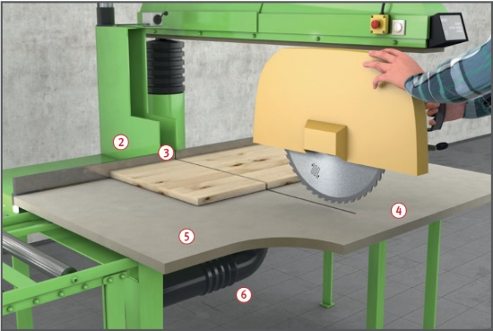

Beim Hineingreifen in die
Schneidebene können schwere
Verletzungen an den Händen
verursacht werden. Es kann zu
einer Schädigung des Gehörs
kommen.
Das Einatmen freigesetzter
gesundheitsschädlicher Stäube
kann zu einer Erkrankung der
Atemwege führen.
Schutzmaßnahmen
Betriebsanleitung des Herstellers beachten.
Unterweisung anhand der Betriebsanweisung
Gehörschutz und Sicherheitsschuhe benutzen. Lärmbereiche kennzeichnen.
Eng anliegende Kleidung tragen.
Gefahrenbereich von 120 mm rund um das Sägeblatt beachten.
Auf richtige Anbringung und
Einstellung der Schutzhaube
achten. Sie muss mindestens
bis zur Unterkante der Spannflansche
reichen .
In Ausgangsstellung muss das
gesamte Sägeblatt verkleidet
sein, d. h. hinter dem Werkstückanschlag
muss auch für den unteren
Teil des Sägeblattes eine
Verkleidung angebracht sein .
Schlitzbreite im Werkstückanschlag für Austritt des Sägeblattes
so schmal wie möglich,
maximal 8 mm einstellen.
Ausschlag des Sägeaggregates
auf Tischbreite begrenzen. Ausnahme:
Zahnkranz des Sägeblattes
wird durch Schutzeinrichtung
verdeckt, wenn dieser über den
vorderen Tischrand hinausragt,
z. B. durch Tischverbreiterung .
Maschine so einrichten, dass
die Säge nach dem Schnitt
selbsttätig in die Ausgangsstellung
zurückkehrt und dort festgehalten
wird, z. B. durch Einrastklinke
mit Rückholfeder.
Beiderseits der Schneidebene
müssen über die gesamte Breite
im Tisch Auflagen aus leicht zerspanbarem
Material vorhanden
sein, z. B. aus Holz, Kunststoff .
Maschine nur mit wirksamer
Absaugung betreiben .
Zusätzliche Hinweise für Maschinen mit kraftbetriebenem Vorschub
Nur Maschinen benutzen, bei
denen während des Werkzeugvorschubes
ein Hineingreifen in
die Schneidebene vermieden
wird, z. B. Maschinen mit Zweihandschaltungen .
Zweihandschaltungen
müssen unmittelbar neben dem
Schneidbereich liegen und so
angeordnet, beschaffen und
gestaltet sein, dass
für die Betätigung beide
Hände erforderlich sind,
die Bedienelemente während
des gesamten Arbeitsganges
betätigt werden müssen,
beim Loslassen auch nur eines
Bedienelementes der Werkzeugvorschub
unterbrochen
und umgekehrt wird,
für jeden Arbeitsgang die
Bedienelemente erneut
betätigt werden müssen.
Werkstücke mit Festhaltevorrichtungen
gegen Ausweichen
sichern, z. B. durch Niederhalter,
Spannzylinder .
Darauf achten, dass Maschinen
nach dem Sägevorgang vollständig
in die Ausgangsstellung
zurückgehen und dort selbsttätig festgehalten werden.

Zusätzliche Hinweise für Kreissägeblätter
Nur Kreissägeblätter verwenden, die mit dem Namen oder Zeichen des Herstellers gekennzeichnet sind.
Nur Sägeblätter mit negativem Spanwinkel ≤ 5° verwenden.
Bei Verbundkreissägeblättern
muss zusätzlich die höchstzulässige
Drehzahl angegeben
sein. Angegebene Drehzahl
nicht überschreiten.
Lärmarme Sägeblätter
benutzen.
Beschädigte Sägeblätter, z. B.
solche mit Rissen, Verformungen,
Brandflecken aussortieren.
Keine Sägeblätter aus hoch
legiertem Schnellarbeitsstahl (HSS) verwenden.
Arbeitsmedizinische Vorsorge
Arbeitsmedizinische Vorsorge
nach Ergebnis der Gefährdungsbeurteilung
veranlassen (Pflichtvorsorge)
oder anbieten (Angebotsvorsorge).
Hierzu Beratung
durch den Betriebsarzt.
Beschäftigungsbeschränkungen
Jugendliche über 15 Jahre
dürfen nur unter Aufsicht eines
Fachkundigen und wenn es die
Berufsausbildung erfordert an
Pendel- und Auslegerkreissägemaschinen
arbeiten.
Jugendliche unter 15 Jahre
dürfen nicht an diesen Maschinen
beschäftigt werden.